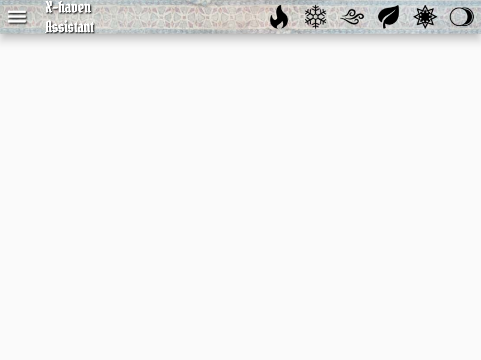
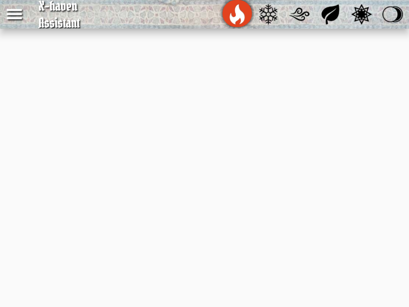
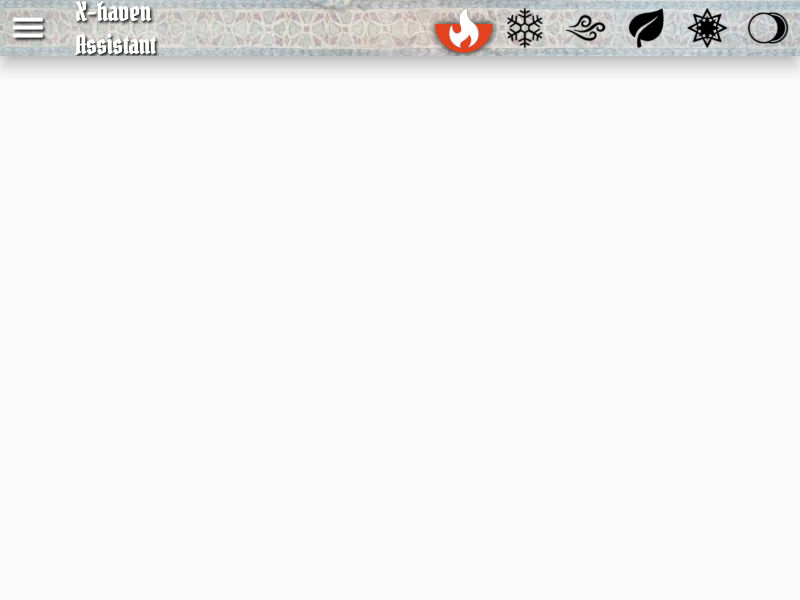
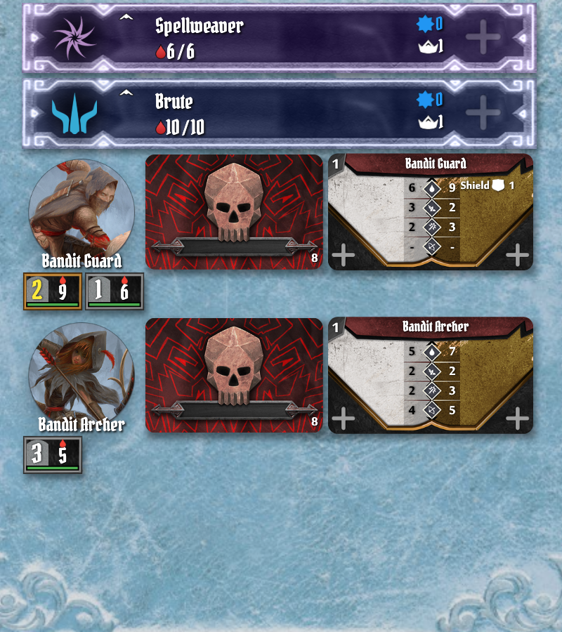
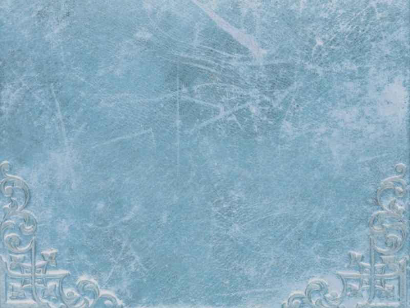
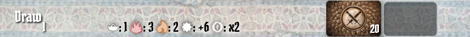
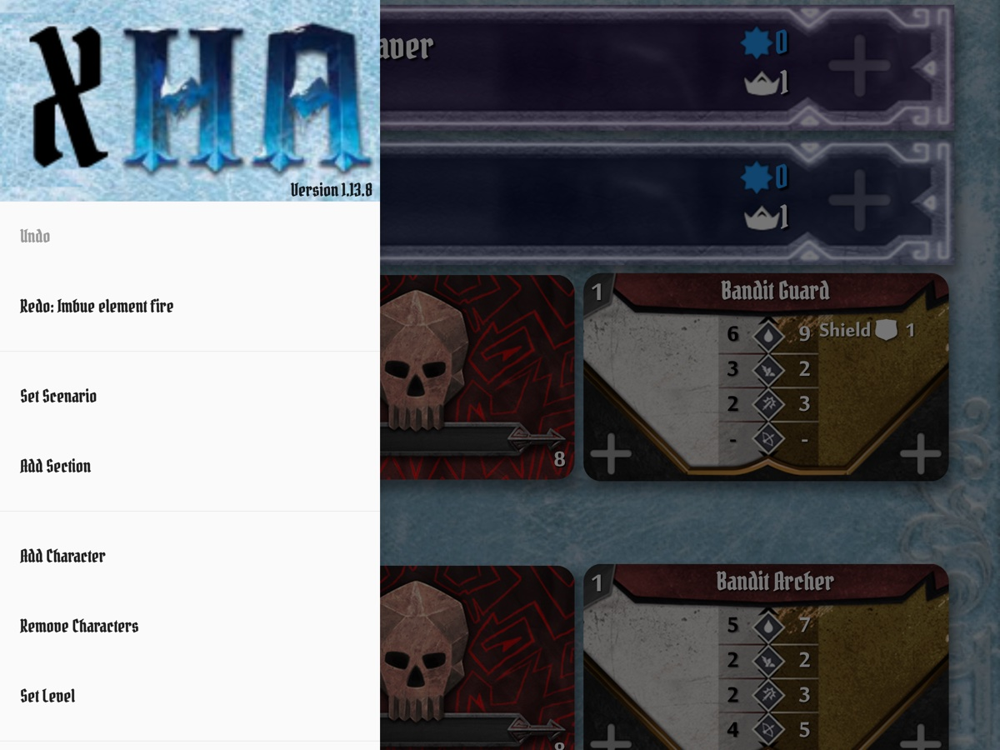

X-Haven Assistant — User Manual
§3The Main Screen
§3.1Anatomy
The main screen is a single Scaffold with four named regions, implemented by MainScaffold (lib/Layout/main_scaffold.dart):
- Top bar — six element icons across the right; the menu icon (
≡) on the far left; the title "X-haven Assistant" beside it. See §3.2. - Main list — the body. Characters and monster types stack vertically in initiative order. Empty until you add characters and set a scenario. See §3.3.
- Bottom bar — the Draw / Next Round button, scenario stat icons (level / trap / hazardous / XP / coin), the level widget, network UI, and the attack modifier deck card. See §3.4.
- Sidebar drawer — opened by tapping
≡. Catalog of every menu the app exposes (Set Scenario, Add Character, Settings, etc.). See §3.5.
Two transient overlays float over the body and don't have a fixed region:
- Toasts — short status notifications that fade in and out (e.g., "Round end").
- Modal menus — every "tap to open a menu" interaction (Add Character, Set Scenario, etc.) opens a dismissable dialog over the main screen rather than navigating.
≡) is tapped (§3.5).
s2-3-scenario-active.jpg, produced by the Manual screenshots group in test/widget/manual_goldens_test.dart. The numbered callouts and region outlines are an inline SVG overlay — edit them directly in this file. The sidebar drawer is closed in the base image; callout ④ marks the menu icon (≡) that opens it.§3.2Top bar — elements
The top bar (TopBar, lib/Layout/top_bar.dart) houses the six element icons that the rules call out: fire, ice, air, earth, light, dark. Each element has three visual states:
- Inert — element is not in play.
- Full / strong — element is fully infused this round.
- Waning / half — element is fading at the end of next round.
Tap an element to infuse it to full. Long-press to set it directly to waning (useful for the start-of-scenario element conditions some scenarios specify, and for Elementalist play). Tapping a full element again uses it (returns to inert). At round end, full elements decay to waning, and waning to inert (subject to the Elementalist's perk in Gloomhaven 2E).



Manual screenshots group in test/widget/manual_goldens_test.dart. Regenerate after UI changes: flutter test --update-goldens test/widget/manual_goldens_test.dart. Verify against goldens (no rewrite): omit --update-goldens.§3.3Main list — initiative and figures
The body of the screen (MainList, lib/Layout/main_list.dart) is a vertically-scrolling list. Each entry is one figure or figure group:
- Character banner — full-width horizontal banner per character. Shows the class icon, character name, level, current/max HP, XP, conditions, summons (if any), and an initiative slot. Color-coded per class.
- Monster type widget — one per active monster type (e.g., "Bandit Guard"). Shows the type's portrait, the currently-drawn ability card, the stat card for current level, and one standee block per spawned standee, each with HP/conditions and a normal/elite indicator.
- Objective / escort entries — represented as characters with a special class. See §6.1.
Reordering. When initiative is entered for all figures, the list re-sorts automatically. To reorder manually (e.g., for ties or scenario-specific overrides), long-press any entry and drag.


§3.4Bottom bar — round, scenario, draw, AMD
The bottom bar (BottomBar, lib/Layout/bottom_bar.dart) holds the round-level controls. From left to right:
- Draw / Next Round button — the morphing button described in §5.2 and §5.8. Reveals monster ability cards mid-round; advances the round when tapped at end of round. Cross-references the morphing-button caveat (issue #135).
- Scenario stat line — five compact icons showing scenario-level (top-of-bar number), trap damage, hazardous terrain damage, XP bonus per kill, and coin multiplier. Auto-populated when a scenario is set; goes blank when none is set.
- Level widget — the small numeric box showing scenario level. Tap it to adjust scenario level mid-game (custom difficulty); see §4.5.
- Network UI — invisible 0×0 widget that owns network toast notifications. No visual footprint; only surfaces toasts when network state changes.
- Modifier deck card — the right-edge card showing the top-of-deck for the monster attack modifier deck (or the current draw if a card is showing). Tappable for AMD interactions; see §5.6.

1, trap 3, hazardous 2, XP +6, coin x2), level widget showing 20, modifier deck card on the right.§3.5Sidebar drawer
The sidebar drawer (MainMenu, lib/Layout/menus/main_menu.dart) is the catalog of everything you can do that isn't a tap on a banner or button. Open it by tapping ≡ in the top bar; close it by tapping outside or swiping it away.

From top to bottom, the drawer contains:
- Header — "X-Haven Assistant" logo + version string.
- Undo / Redo — labelled with the action they would reverse. Up to 250 levels deep. See §10.1.
- Set Scenario — opens scenario picker. See §4.2.
- Add Section — opens section picker for the current scenario (if any sections are still revealable).
- Add / Remove Character / Set Level — character roster management. See §4.1.
- Loot Deck Menu (Frosthaven only) — loot deck composition + draws. See §7.1.
- Add / Remove Monsters — manual monster management for custom scenarios or unusual mid-scenario reinforcements. See §4.3.
- Show / Hide Ally Attack Modifier Deck — toggles the allies AMD when allied figures are present.
- Settings — opens the settings dialog. See §11.
- Connect to Server / Start Host Server — network controls (with the local IPv6 address shown for the host case). See §9.
- Documentation — opens the project README on GitHub in the system browser.
- Donate (non-iOS only) — opens a Ko-fi link.
- Exit (desktop only) — saves state and closes the window.
Items are visible/hidden based on game state and platform; for example, Loot Deck Menu only appears when a Frosthaven scenario is active, and Donate is suppressed on iOS to comply with App Store policy.
§3.6Common gestures
The app makes consistent use of a small set of gestures. Knowing these is enough to drive most of the UI:
| Gesture | Where | What it does |
|---|---|---|
| Tap | Anywhere | The primary action — open a menu, increment a counter, infuse an element. |
| Long-press | Element icons | Sets the element to waning directly (skipping full). |
| Long-press | Main list entries | Picks up the entry to drag-reorder it manually. |
| Long-press | HP / counter buttons | Opens a numpad for direct numeric entry instead of single-step. |
| Double-tap | Ability cards, modifier cards, stat cards | Zooms the card to full-screen for inspection. Tap again to dismiss. |
| Drag | Initiative banners | Alternative initiative entry — drag to set an initiative without opening the numpad. (Setting controlled in §11.) |
| Tap outside | Open menu / drawer | Dismisses the menu without committing anything. |
Gestures are intentionally minimal — there are no swipes-to-delete or pinch zooms. If a gesture isn't listed here, the app probably doesn't recognize it.
§3.7Icons and symbols
The app inherits its icon vocabulary from the rulebook. The full glossary is in §13.3; a brief tour of the high-frequency icons:
- Elements — fire (flame), ice (snowflake), air (swirl), earth (leaf), light (radiating star), dark (crescent moon). Used in the top bar (§3.2) and on monster ability cards.
- Conditions — small round tokens displayed under HP. Most common: Wound (drop with thorns), Poison (drop with skull), Stun (lightning), Disarm (broken sword), Immobilize (chains), Muddle (X), Strengthen (up arrow), Bless / Curse (modifier-deck symbols), Invisible (eye).
- Scenario stats — five icons on the bottom bar (§3.4): scenario level, trap damage, hazardous terrain damage, XP bonus, coin multiplier.
- Class icons — colored class glyphs on character banners and condition tokens. Each class has a unique color used as the banner background.
- Standee colors — normal monsters use the muted stat-card color; elites use a yellow-bordered variant. Bosses and named monsters have unique frames.
Icons are rendered from PNGs in assets/images/; theme-specific variants (Gloomhaven vs Frosthaven) are picked at render time based on the active scenario edition.